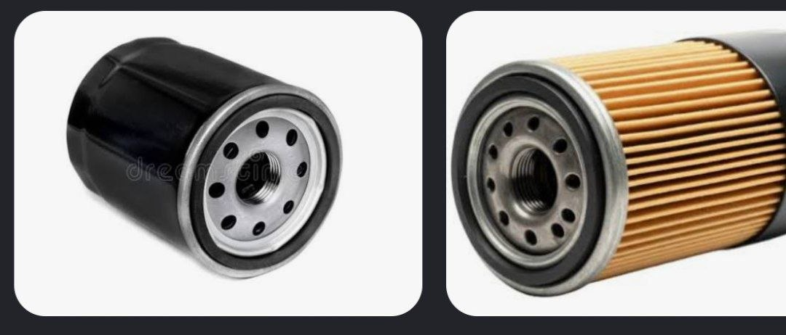
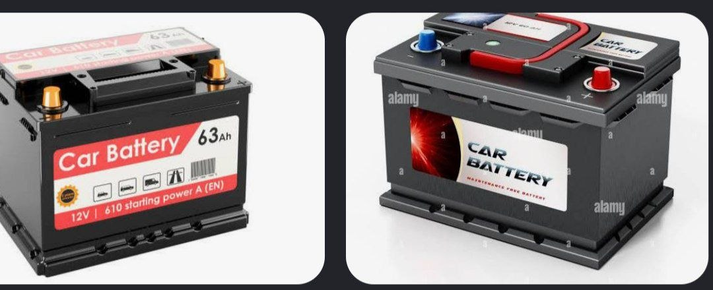
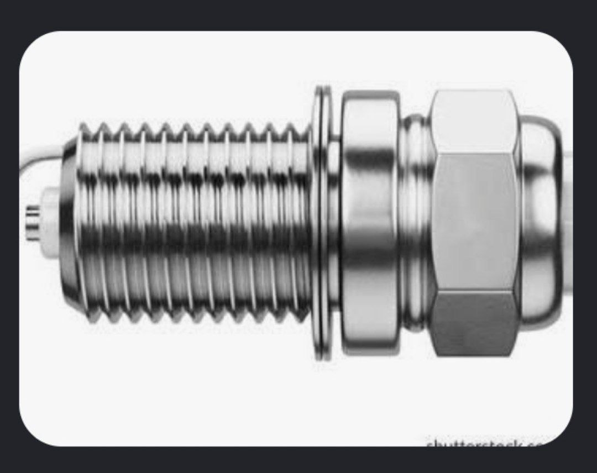

SALEM Spare Parts

|
 The oil filter traps dirt, metal particles, and sludge from your engine oil to keep internal engine components lubricated and clean. |

The air filter cleans incoming outside air by blocking dust, sand, and debris before it mixes with fuel in the engine |
 |
 |